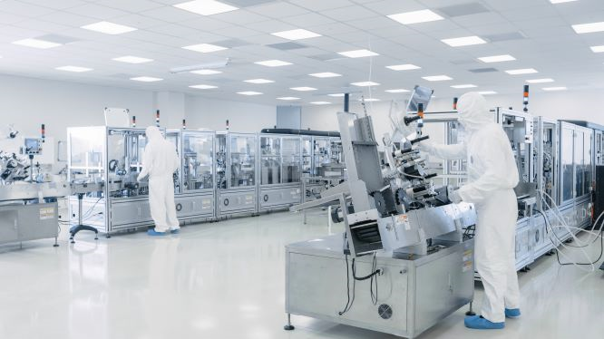

Validatie en techniek
ISO-omgeving en cleanroom-principes helder en praktisch uitgelegd
De verwijzing naar ISO 6/7-principes op de UltraFine-pagina gaat over een professionele manier van kijken naar luchtkwaliteit: luchtkwaliteit beheersen, meten en technisch onderbouwen. Het gaat dus niet alleen om comfort, maar om een omgeving waarin deeltjesbelasting, stabiliteit en prestaties serieus worden benaderd.



Wat betekent een ISO-omgeving in de praktijk?
Een ISO-omgeving draait om gecontroleerde luchtzuiverheid. Daarbij wordt gekeken naar het aantal deeltjes in de lucht, naar de stabiliteit van de ruimte en naar de vraag of die prestaties ook meetbaar en herhaalbaar zijn. Daarom hoort een ISO-klasse altijd bij een ruimte of zone als geheel en niet bij een los toestel.
De classificatie hangt samen met luchtstromen, gebruik, inpassing, onderhoud en de manier waarop de ruimte wordt belast.
De norm kijkt naar concentraties van luchtgedragen deeltjes in verschillende groottes.
Alleen een meetbaar en herhaalbaar resultaat maakt een gecontroleerde omgeving inhoudelijk sterk.
Hoe de ISO 14644-reeks samenhangt
De openbare samenvattingen van ISO 14644 laten een duidelijke opbouw zien. ISO 14644-1 gaat over classificatie van luchtzuiverheid op basis van deeltjesconcentratie. ISO 14644-2 gaat over monitoring om prestaties blijvend te bewaken. ISO 14644-3 beschrijft testmethoden voor verschillende gebruikstoestanden van een ruimte. Samen vormen die drie onderdelen het kader waarmee een gecontroleerde omgeving inhoudelijk wordt beoordeeld en bewaakt.
Overzicht
Tabel met ISO-klassen
Onderstaand overzicht laat per ISO-klasse de maximale aantallen deeltjes per m³ lucht zien. Voor snelle herkenning is de voor UltraFine meest relevante referentieklasse groen gemarkeerd.
| ISO-klasse | ≥ 0,1 µm | ≥ 0,2 µm | ≥ 0,3 µm | ≥ 0,5 µm | ≥ 1,0 µm | ≥ 5,0 µm | Duiding |
|---|---|---|---|---|---|---|---|
| ISO 1 | 10 | 2 | 1 | - | - | - | Extreem specialistisch. |
| ISO 2 | 100 | 24 | 10 | 4 | 1 | - | Zeer hoog gecontroleerde omgevingen. |
| ISO 3 | 1.000 | 237 | 102 | 35 | 8 | - | Zeer lage deeltjesacceptatie. |
| ISO 4 | 10.000 | 2.365 | 1.018 | 352 | 83 | 3 | Zeer schone proceszones. |
| ISO 5 | 100.000 | 23.651 | 10.176 | 3.517 | 832 | 29 | Klassieke cleanroomtoepassingen. |
| ISO 6 | 1.000.000 | 236.514 | 101.763 | 35.168 | 8.318 | 293 | Schone productie en afgeschermde omgevingen. |
| ISO 7 | 10.000.000 | 2.365.144 | 1.017.625 | 351.676 | 83.176 | 2.925 | Relevante referentieklasse voor UltraFine in deze uitleg. |
| ISO 8 | 100.000.000 | 23.651.441 | 10.176.251 | 3.516.757 | 831.764 | 29.251 | Milder gecontroleerde omgevingen. |
| ISO 9 | 1.000.000.000 | 236.514.412 | 101.762.505 | 35.167.572 | 8.317.638 | 292.511 | Benadert gewone ruimtelucht. |
Dit is een vereenvoudigd en afgerond overzicht voor snelle orientatie. Voor formele classificatie, meetstrategie en toetsing blijft de norm zelf leidend.
Waarom wordt ISO 6/7 bij UltraFine genoemd?
De UltraFine-pagina gebruikt de verwijzing naar ISO 6/7-principes om duidelijk te maken dat de oplossing inhoudelijk past bij projecten waar luchtkwaliteit serieus en technisch wordt benaderd. Het gaat daarbij vooral om de combinatie van deeltjesreductie, een rustige luchtstroom, lage luchtweerstand en de behoefte aan onderbouwing in een professionele omgeving.
UltraFine sluit aan op ruimtes waar luchtkwaliteit meer moet zijn dan een algemeen comfortargument.
De koppeling met cleanroom-principes helpt om de technologie sterker uit te leggen aan adviseurs, installateurs en eindklanten.
Validatie, meetrapporten en fijnstofonderzoek maken het verhaal sterker in projecten waar prestaties aantoonbaar moeten zijn.
Samengevat
Deze pagina is bedoeld om de verwijzing naar ISO- en cleanroom-principes op de UltraFine-pagina beter te duiden. De kern is dat UltraFine relevant wordt in projecten waar luchtkwaliteit meetbaar, overtuigend en professioneel moet worden uitgelegd. Dat maakt de koppeling inhoudelijk sterk, zolang hij gelezen wordt als technische context voor de ruimte en niet als losse certificeringsclaim.